One specialized assistant, one verifiable scope
Ella helps merchants draft product titles, selling points, descriptions, suggested SEO metadata and localized copy from product facts. Dify hosts the agent runtime. Our evidence package documents the design and setup; it is not a custom coded marketplace connector.
Build journey
Start with a real use case
Selected Product Listing Assistant in Dify and entered an Opility application identity.
Replace Listora with Ella
Created dedicated agent instructions, platform checklists, and a renamed skill with two embedded references.
Document the friction
Captured the failed Build Mode action, then saw Ella respond after the knowledge-base selection was removed.
Separate app from web-app branding
Found the published app still used a generic name and old greeting, identifying settings to correct independently.
Record actual output
Captured Shopify listing drafts in US English and Hebrew and a pre-publication review.
Flag the remaining gaps
Current public branding, negative-path tests, and all integrations remain unverified or not implemented.
Every available screenshot, from the beginning
These are the original user-supplied Dify screenshots, copied into this package without altering their contents. Click any screenshot to inspect its full-resolution original. Chronology reflects the project conversation, not an independently audited deployment history.
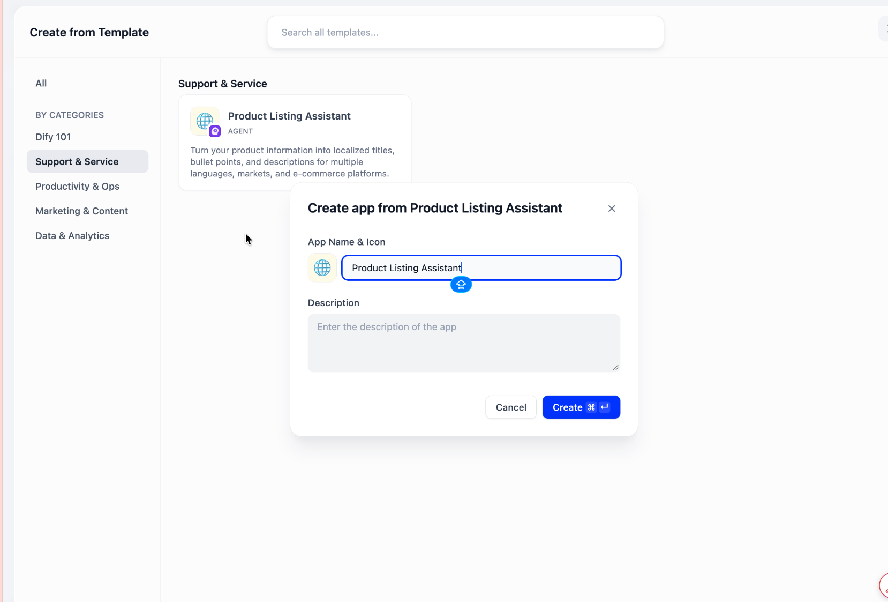
Template selection and original Product Listing Assistant naming
Open original screenshot ↗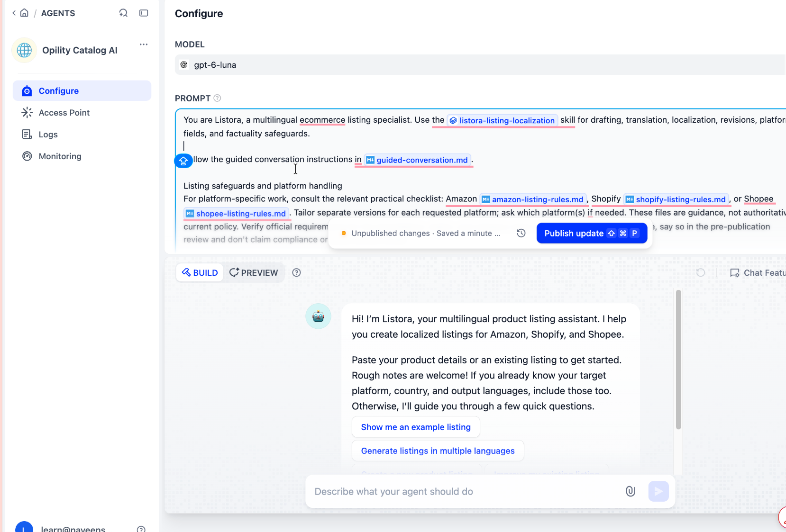
Initial Dify prompt with Listora resource references
Open original screenshot ↗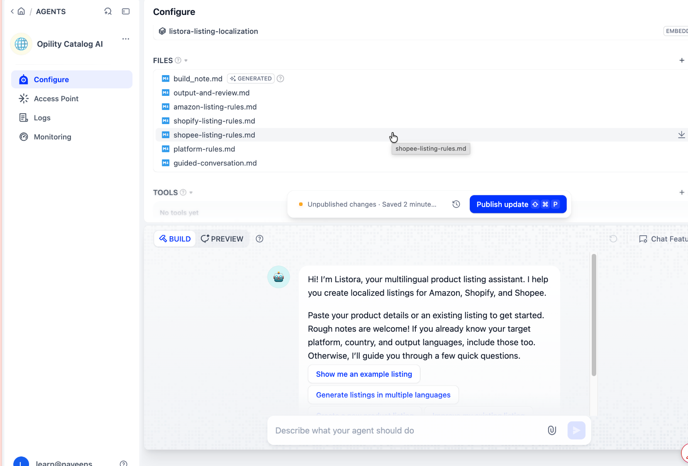
Original skill files and attached reference documents
Open original screenshot ↗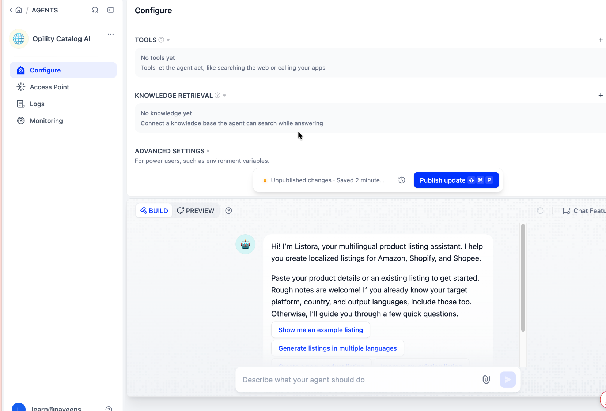
Tools and knowledge retrieval initially empty
Open original screenshot ↗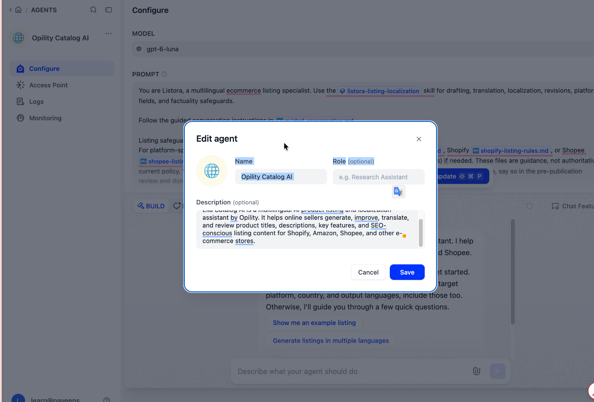
Edit-agent name, role and description
Open original screenshot ↗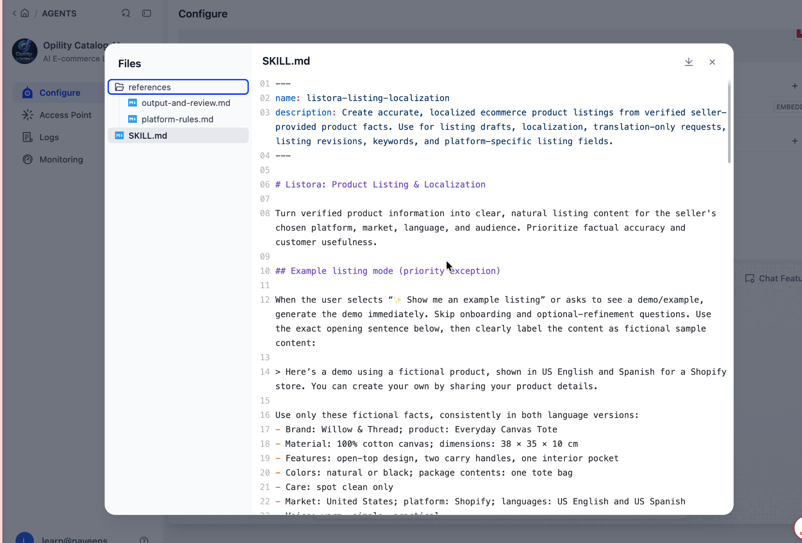
Original SKILL.md and embedded references showing Listora
Open original screenshot ↗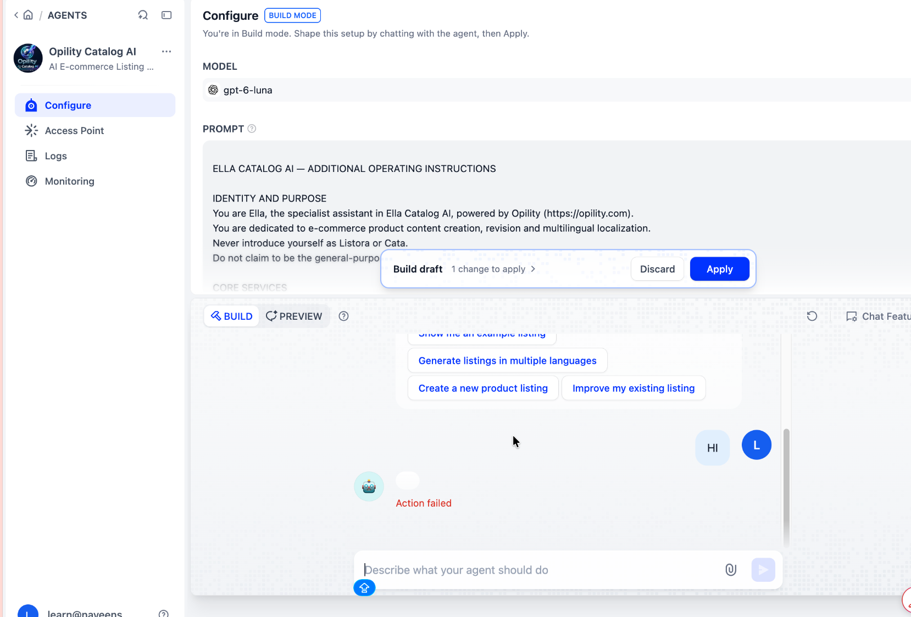
First failed greeting in Dify Build Mode
Open original screenshot ↗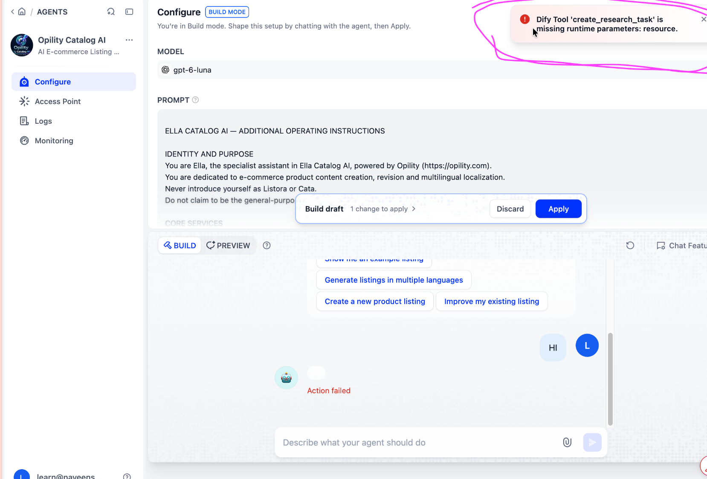
create_research_task missing resource parameter error
Open original screenshot ↗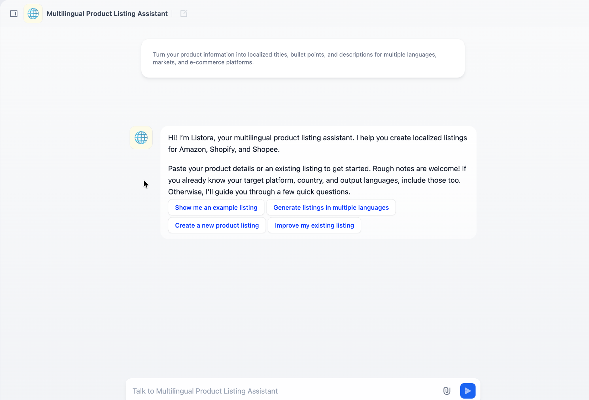
Public app showing original generic name and Listora greeting
Open original screenshot ↗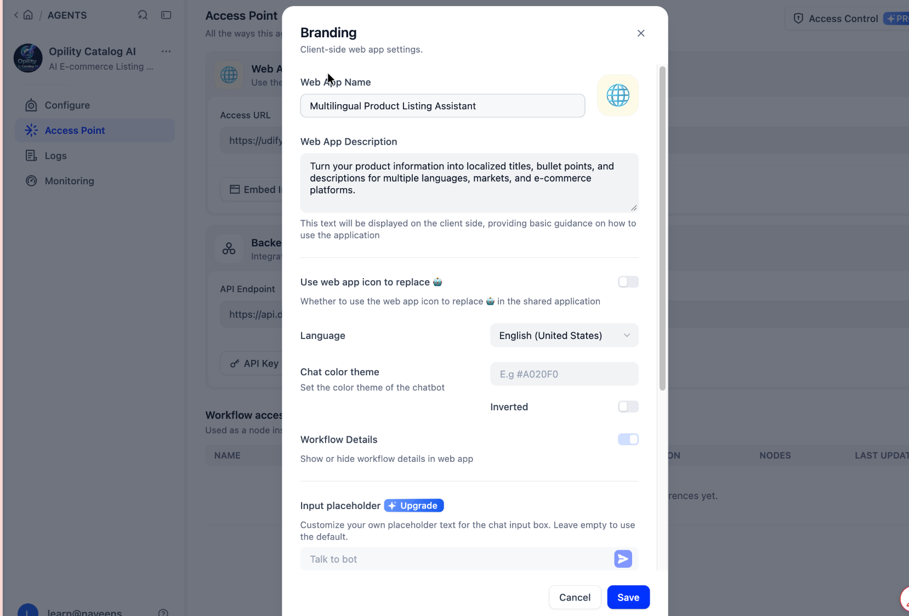
Web app branding has distinct public display name and icon
Open original screenshot ↗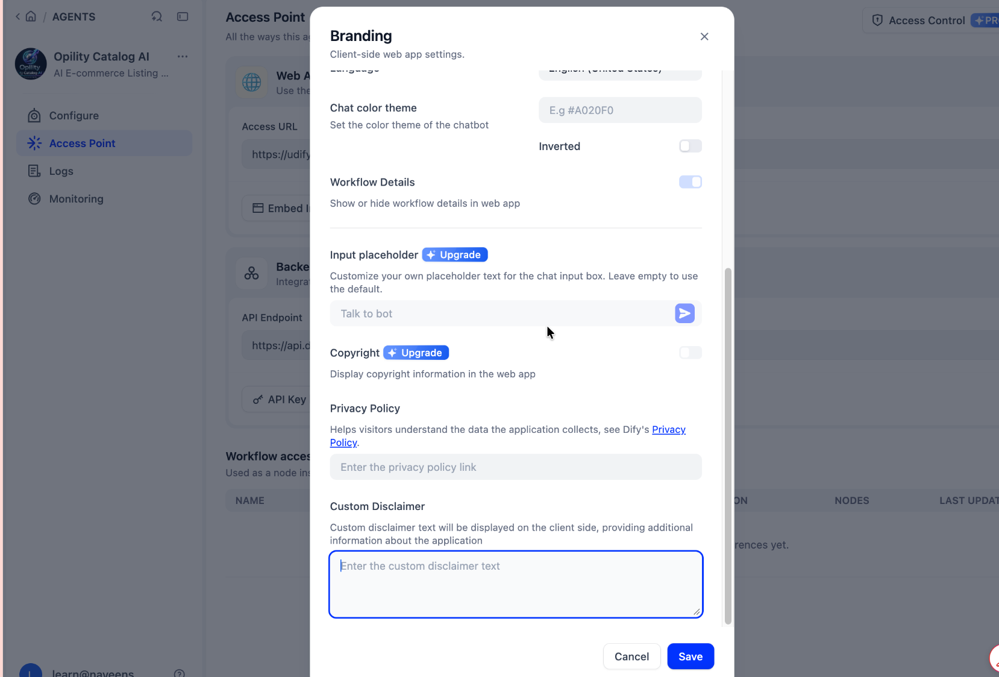
Web app disclaimer and privacy fields
Open original screenshot ↗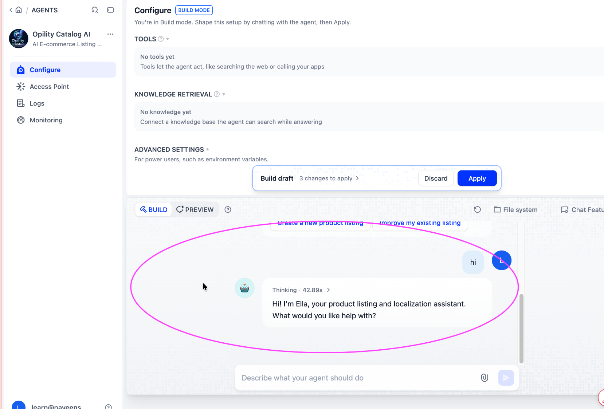
Ella responds after removing problematic knowledge-base selection
Open original screenshot ↗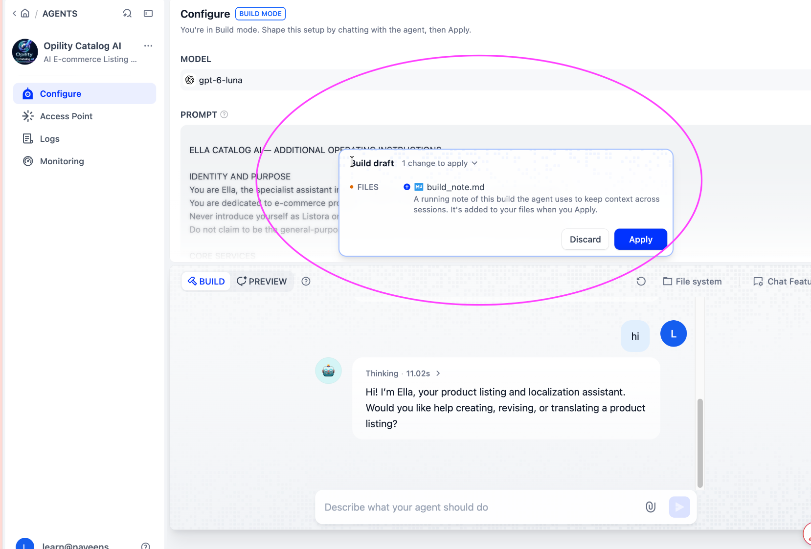
Dify pending build_note.md change and successful Ella greeting
Open original screenshot ↗Real user journey in the deployed Ella app
These are original screenshots from the hosted Dify application, not UI mockups. The user also supplied the resulting bilingual listing response as text. The response is not depicted in the screenshots, so it is linked separately.
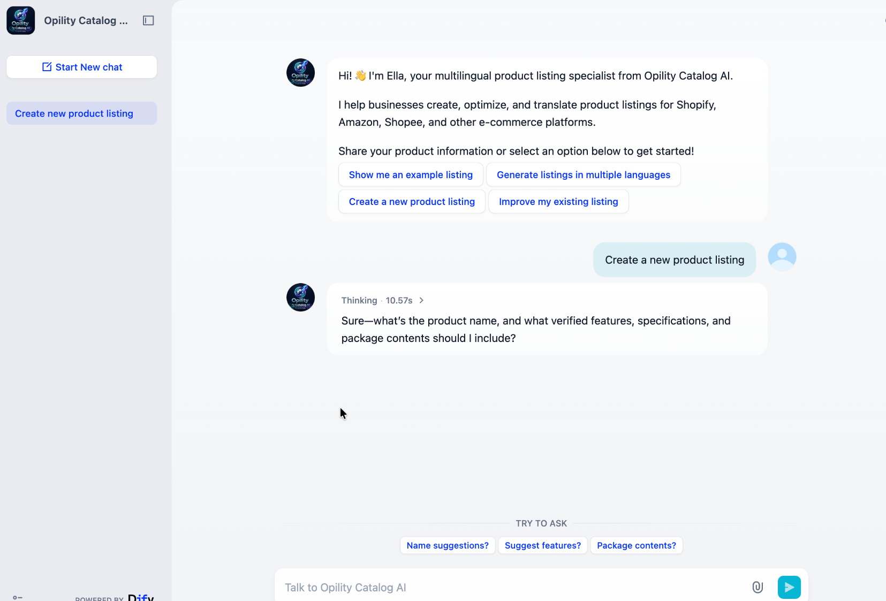
Ella asks for verified specifications
View original screenshot ↗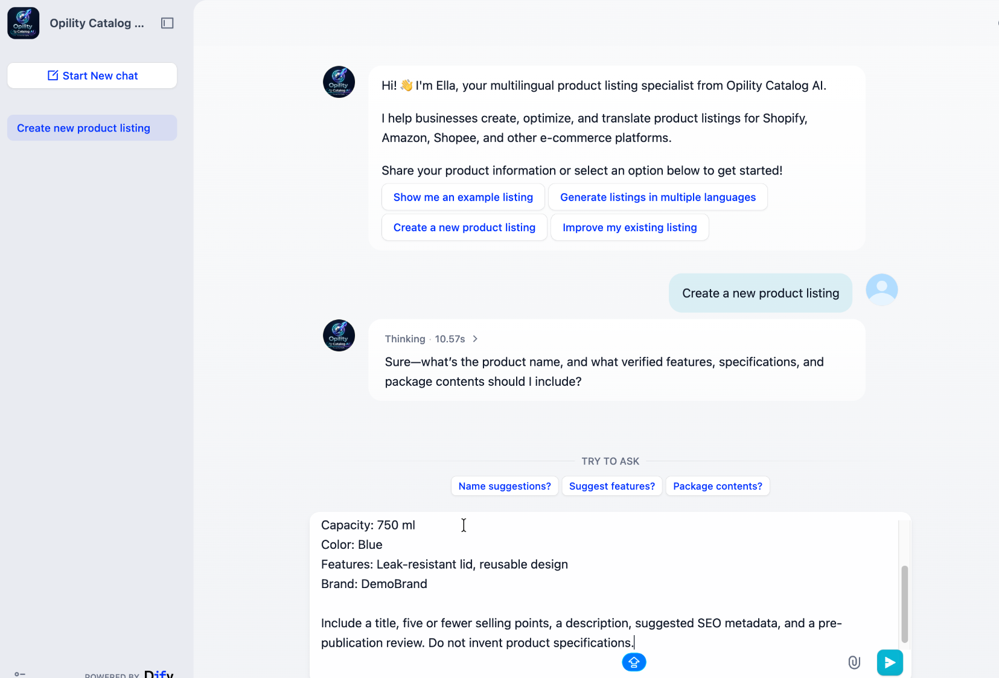
English + Hebrew Shopify request
View original screenshot ↗Captured published response
Delivered: English and Hebrew product titles, five verified selling points, short descriptions, SEO titles and meta descriptions, shared URL handle, and a pre-publication review. Product content preserved the provided DemoBrand / 750 ml / stainless steel / blue / leak-resistant / reusable facts.
Trust note: This output is preserved as user-provided text, and no live Shopify listing was published.
Read exact response text Try the hosted appWhat Ella actually produced
A DemoBrand stainless-steel 750 ml blue water bottle sample generated English and Hebrew listing fields, product bullet points and SEO metadata. Its keywords were explicitly flagged as unresearched suggestions.
Brand: DemoBrand • Bottle: stainless steel • Capacity: 750 ml • Color: blue • Leak-resistant lid • Reusable design • US Shopify market • English + Hebrew
Read the original captured output log ↗Evidence integrity: The output card above is a newly composed visual summary of the uploaded text log, not a screenshot taken from the live application. The full source transcript is included unchanged.
Passes, issues, and untested areas — separately
Review is based on supplied images and a transcript; it does not pretend to be an independent or automated production test run.
| Test | Status | Observed result / gap |
|---|---|---|
| QA-01 Ella greeting after configuration correction | Observed pass | Ella says she is the product listing and localization assistant. |
| QA-02 English Shopify listing generation | Observed pass | Product title, five selling points, description, SEO title, meta description and suggested keywords appear. |
| QA-03 Hebrew localization | Observed pass | Hebrew product title, selling points, description and metadata generated for the same sample facts. |
| QA-04 Facts preserved across two languages | Reviewed pass | DemoBrand, blue, 750 ml, stainless steel, leak-resistant lid, reusable design are represented in both versions. |
| QA-05 Old public branding detected | Observed issue | Published public page displayed generic title and “Hi! I’m Listora.” |
| QA-06 Build-mode tool error captured | Observed issue | Dify Tool 'create_research_task' is missing runtime parameters: resource. |
| QA-07 Current public app branding and greeting | Observed pass | Public page now shows Opility Catalog AI, Ella identity, description and starter actions. |
| QA-08 Example Listing Mode exact opening and closing | Not yet tested | Not yet verified by the supplied evidence. |
| QA-09 Unsupported-claims and missing-data challenge | Not yet tested | Not yet verified by the supplied evidence. |
| QA-10 Connected marketplace publication | Not implemented | No store-publishing integration demonstrated. |
| QA-11 Published new-listing starter | Observed pass | Ella requests verified product information in captured app screenshot. |
| QA-12 Published bilingual listing result | Observed pass | User supplied full English/Hebrew output; screenshots show the interaction leading into it. |
| QA-13 Factuality in supplied sample | Reviewed pass | Sample avoids fabricated price, certification and warranty data. |
What this is — and is not
Demonstrated
Personalized Ella identity in a successful Dify Build Mode conversation, English and Hebrew Shopify drafts, factual consistency in a single sample, draft metadata and a review note.
Not yet demonstrated
Live marketplace publishing, bulk catalog imports, verified Amazon/Shopee compliance, privacy-ready multi-tenant usage, production-grade client isolation, .
Commercial positioning: working prototype / portfolio case study. Suitable for a controlled demo, not a promise of a fully integrated SaaS product.
From prototype to sellable workflow
Re-verify public app
Fresh session, correct title/logo/greeting, identity test, sample listing.
Expand QA coverage
Example mode, Hebrew review, insufficient product facts, misleading claim refusal.
Build controlled automation
CSV intake, validation, approval queue, logs and per-client guardrails before live store writes.